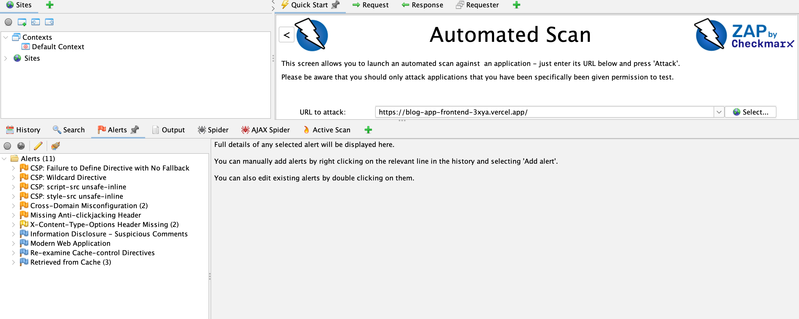
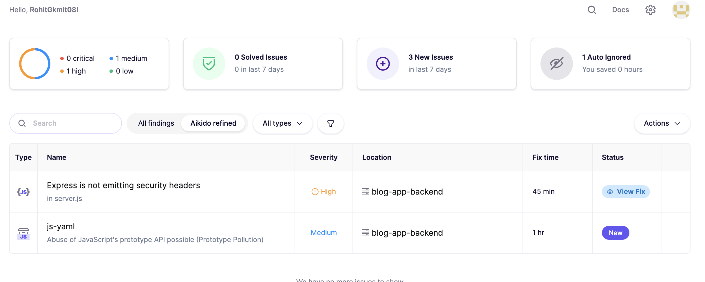

17. Security Scans
This document outlines the security threats, scanning tools, and remediation strategies for the DailyPost application.
What are Security Threats?
Security threats are potential vulnerabilities and risks that can compromise the security of the DailyPost application. Common threats include:
1. Cross-Site Scripting (XSS)
- Description: Attackers inject malicious scripts into web pages
- Impact: Steal user data, session hijacking, defacement
- Prevention: Input validation, output encoding, Content Security Policy
2. SQL/NoSQL Injection
- Description: Attackers inject malicious queries into database operations
- Impact: Unauthorized data access, data manipulation, data deletion
- Prevention: Parameterized queries, input validation, ORM usage
3. Cross-Site Request Forgery (CSRF)
- Description: Attackers trick users into performing unwanted actions
- Impact: Unauthorized actions on behalf of users
- Prevention: CSRF tokens, SameSite cookies, origin validation
4. Clickjacking
- Description: Attackers overlay malicious content over legitimate pages
- Impact: Users tricked into clicking hidden elements
- Prevention: X-Frame-Options header, CSP frame-ancestors
5. Security Header Missing
- Description: Missing security headers expose application to various attacks
- Impact: MIME sniffing, protocol downgrade, information disclosure
- Prevention: Implement security headers (helmet.js)
6. Dependency Vulnerabilities
- Description: Third-party packages with known security vulnerabilities
- Impact: Exploitation of vulnerable dependencies
- Prevention: Regular dependency updates, vulnerability scanning
7. Authentication Bypass
- Description: Weak authentication mechanisms allow unauthorized access
- Impact: Unauthorized access to admin features
- Prevention: Strong passwords, secure session management, MFA
8. Information Disclosure
- Description: Sensitive information exposed in errors, comments, or headers
- Impact: Attackers gain information about system architecture
- Prevention: Secure error handling, remove sensitive comments
Security Scanning Tools
1. OWASP ZAP (Zed Attack Proxy)

What it does: - Scans web applications for security vulnerabilities - Tests API endpoints for security issues - Identifies misconfigurations and missing security headers - Provides detailed vulnerability reports
How it works: 1. Crawls the application to discover pages and endpoints 2. Performs active security testing 3. Identifies vulnerabilities and categorizes them by risk 4. Generates reports with remediation guidance
What it finds: - Missing security headers (X-Frame-Options, CSP, HSTS) - Content Security Policy issues - Cross-origin resource sharing (CORS) misconfigurations - Information disclosure vulnerabilities - Cache configuration issues
2. Aikido Security

What it does: - Continuously monitors codebase for security issues - Scans dependencies for known vulnerabilities - Identifies code-level security problems - Provides fix time estimates and remediation steps
How it works: 1. Monitors code changes in real-time 2. Scans npm dependencies for known CVEs 3. Analyzes code for security anti-patterns 4. Alerts on new security issues
What it finds: - Vulnerable dependencies (e.g., js-yaml prototype pollution) - Missing security headers in Express.js - Code-level security issues - Infrastructure security problems
Security Scan Results Summary
OWASP ZAP Findings
- CSP Issues: 4 (Medium-Low risk)
- Security Headers: 3 (Medium-Low risk)
- CORS Issues: 2 (Medium risk)
- Information Disclosure: 2 (Low risk)
- Cache Issues: 4 (Low-Informational)
Aikido Findings
- High Severity: 1 (Missing security headers)
- Medium Severity: 1 (js-yaml vulnerability)
Best Practices
- Scan Regularly: Run security scans before deployments and weekly
- Fix High Priority First: Address critical vulnerabilities immediately
- Keep Dependencies Updated: Regularly update npm packages
- Use Security Headers: Always implement security headers (helmet.js)
- Validate Input: Validate and sanitize all user inputs
- Secure Authentication: Use strong passwords and secure sessions
- Monitor Continuously: Use tools like Aikido for continuous monitoring
- Document Fixes: Keep track of security fixes and improvements